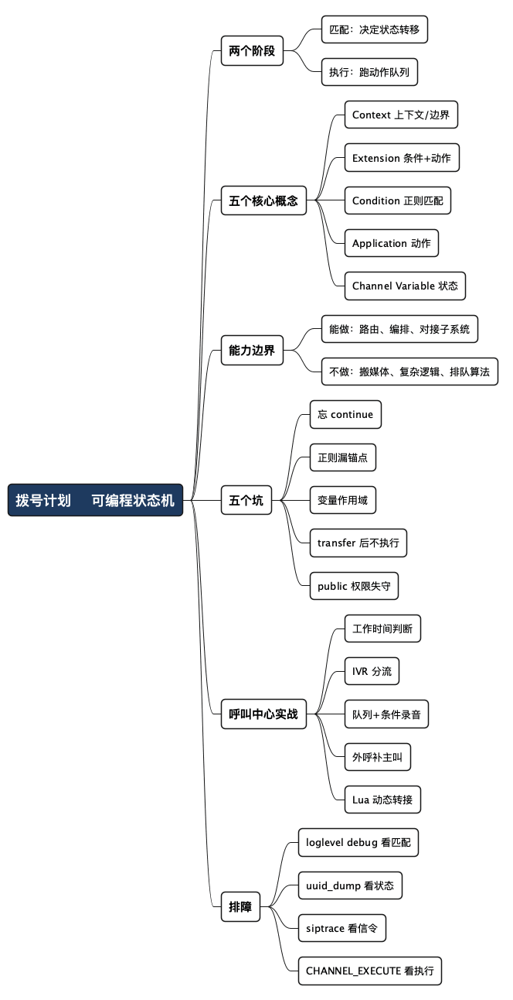

拨号计划 101：FreeSWITCH 里那台可编程状态机
Posted on 一 14 9月 2026 in Tech
| Abstract | 拨号计划 101：FreeSWITCH 里那台可编程状态机 |
|---|---|
| Authors | Walter Fan |
| Category | Tech |
| Version | v1.0 |
| Updated | 2026-09-14 |
| License | CC-BY-NC-ND 4.0 |
大纲
展开看看
- 一个常见的误会：拨号计划不是"路由配置文件"，而是一台按呼叫上下文运行的可编程状态机。分不清这一点，排障时就会一直在错的地方找问题。
- 拨号计划是什么：一通电话进来后，FreeSWITCH 在某个 context 里从上往下匹配 extension，命中就把一串 application 排进 channel 的执行队列，再逐个执行。
- 五个核心概念：Context（上下文/安全边界）、Extension（一组条件+动作）、Condition（正则匹配）、Application（真正干活的动作）、Channel Variable（贴在通话上的状态）。
- 它能干什么、不能干什么：能做路由、变量运算、调用 IVR/排队/录音；不做媒体搬运、不管排队策略本身、复杂逻辑要交给 Lua/ESL。
- 最容易栽的五个坑：忘了
continue、正则锚点漏写、变量作用域搞混、transfer后代码还在跑、context 权限边界失守。 - 呼叫中心实战：把 IVR 分流、工作时间判断、外呼加主叫、座席转接、按条件录音这几件事，用真实的 XML 片段串起来。
- 排障技巧：
sofia global siptrace、uuid_dump、fsctl loglevel、xml_dialplan 的 debug、以及"从 CHANNEL_EXECUTE 事件倒推"的思路。 - 收尾：把拨号计划当状态机看，你才知道每一步 channel 上发生了什么，排障就从"猜"变成"读日志"。
我见过不止一个人，把 FreeSWITCH 的拨号计划当成 Nginx 那样的路由配置：写几条规则，reloadxml 一下，电话就该往对的地方走。等到某天电话莫名其妙挂断、录音只录了一半、外呼显示的主叫号码是空的，他们打开 dialplan/default.xml，盯着那几十行 <condition> 和 <action>，一脸茫然——明明写得清清楚楚，为什么不按预期走？
问题就出在"配置文件"这三个字上。配置文件是静态的，你写什么它就是什么。可拨号计划不是：它是一台按呼叫上下文运行的状态机。同一份 XML，来电号码不同、时间不同、channel 上已经贴了什么变量不同，走出来的路就完全不同。你读那份 XML，读到的只是状态机的"转移规则"；真正决定这通电话命运的，是运行时那一份属于它自己的 channel 状态。
这篇文章想让你记住一件事：拨号计划是路由的可编程状态机，不是配置文件。 想清楚这一点，你排障时就不会再对着 XML 干瞪眼，而是去看这通电话在运行时到底走到了哪一步、channel 上贴了什么、下一个要执行的 application 是谁。下面我以 XML 拨号计划为主，配少量 Lua，把它是什么、能干什么、怎么写、有哪些坑讲清楚，再用几个呼叫中心场景演示怎么排障。
- 一句话立住主张：拨号计划 = 条件匹配（状态转移）+ 动作队列（状态机执行）。
- 它不是媒体面，也不是完整的业务逻辑，别把整个呼叫中心塞进 XML。
先搞清楚：一通电话进来后发生了什么
假设一个座席（或者外部来电）拨了 1005。从 FreeSWITCH 的视角，事情是这样发生的：
- 呼叫落到某个 context（上下文）。context 由是谁发起的呼叫决定——内部分机通常落在
default，外部 SIP Trunk 进来的通常落在public。 - FreeSWITCH 在这个 context 里，从上往下逐条看
<extension>。 - 每个 extension 里有若干
<condition>，拿被叫号码（destination_number）之类的字段去做正则匹配。 - 一旦某条 extension 的条件命中，里面的
<action>就被依次排进 channel 的执行队列——注意，是"排队"，不是立刻执行。 - 匹配阶段走完（或者遇到
transfer、answer后进入某个阻塞 application），FreeSWITCH 开始逐个执行队列里的 application。
一段最小的例子：
<extension name="test_1005">
<condition field="destination_number" expression="^1005$">
<action application="log" data="INFO ===== hit test_1005 uuid=${uuid} from=${caller_id_number} ====="/>
<action application="answer"/>
<action application="playback" data="ivr/ivr-welcome.wav"/>
<action application="hangup"/>
</condition>
</extension>
修改完 /usr/local/freeswitch/conf/dialplan/default.xml 后运行 /usr/local/freeswitch/bin/fs_cli -H 127.0.0.1 -P 8021 -p ClueCon -x reloadxml, 然后用一个 sip phone 拔 1005 这个号码，你就会听见一声 welcome 后挂断。
之后就可能根据 uuid 来查找 Dialplan 的执行, 这里的 uuid 也可通过 fs_cli -x 'show channels' 命令查到
# grep -n "hit test_1005" captures/freeswitch-20260915-054141.log
278:d960436a-6b85-42c7-9bed-65517e161f0a Dialplan: sofia/internal/1001@10.20.30.40 Action log(INFO ===== hit test_1005 uuid=${uuid} from=${caller_id_number} =====)
302:d960436a-6b85-42c7-9bed-65517e161f0a EXECUTE [depth=0] sofia/internal/1001@10.20.30.40 log(INFO ===== hit test_1005 uuid=d960436a-6b85-42c7-9bed-65517e161f0a from=1001 =====)
# grep "d960436a-6b85-42c7-9bed-65517e161f0a" log/freeswitch.log|grep Dialplan
d960436a-6b85-42c7-9bed-65517e161f0a Dialplan: sofia/internal/1001@10.20.30.40 parsing [default->test_1005] continue=false
d960436a-6b85-42c7-9bed-65517e161f0a Dialplan: sofia/internal/1001@10.20.30.40 Regex (PASS) [test_1005] destination_number(1005) =~ /^1005$/ break=on-false
d960436a-6b85-42c7-9bed-65517e161f0a Dialplan: sofia/internal/1001@10.20.30.40 Action log(INFO ===== hit test_1005 uuid=${uuid} from=${caller_id_number} =====)
d960436a-6b85-42c7-9bed-65517e161f0a Dialplan: sofia/internal/1001@10.20.30.40 Action answer()
d960436a-6b85-42c7-9bed-65517e161f0a Dialplan: sofia/internal/1001@10.20.30.40 Action playback(ivr/ivr-welcome.wav)
d960436a-6b85-42c7-9bed-65517e161f0a Dialplan: sofia/internal/1001@10.20.30.40 Action hangup()
field="destination_number" 是要匹配的字段，expression="^1005$" 是正则。命中后，answer、playback、hangup 三个 application 依次执行。看起来平平无奇，但这里已经藏着状态机的两个阶段：匹配（决定状态转移）和执行（跑动作队列）。很多坑，就来自把这两个阶段混为一谈。
拨号计划分两个阶段：先匹配、后执行。 匹配阶段你在"选路"，执行阶段才在"干活"。搞混它们，
transfer之类的动作就会咬到你。
五个核心概念，一张表看懂
拨号计划的词汇其实不多，就五个。搞懂它们各自的职责，读任何一份 dialplan 都不慌。
| 概念 | 它是什么 | 类比 | 常踩的坑 |
|---|---|---|---|
| Context | 一组 extension 的命名空间，也是安全边界 | 小区的门禁分区：内部分机一个区，外线来电一个区 | 把内部路由暴露在 public，等于给外人开了拨打内线的权限 |
| Extension | 一组"条件 + 动作"，匹配一类呼叫 | if 分支 |
顺序敏感，写在下面的可能永远匹配不到 |
| Condition | 用正则匹配 channel 上的某个字段 | if (号码 ~= 某模式) |
漏写锚点 ^...$，^10 会把 1000~1099 全吃掉 |
| Application | 真正执行的动作（放音、桥接、转接……） | 函数调用 | 有的会阻塞（bridge），有的立即返回（set） |
| Channel Variable | 贴在这通电话上的运行时状态 | 请求上下文/session | 作用域和生命周期搞不清，值读出来是空的 |
这里要专门说 channel variable，因为它是"状态机"里"状态"那部分的载体。一通电话从进来到挂断，channel 上会不断被贴变量：主叫、被叫、录音路径、你自己 set 的业务标记……后面的 application 靠读这些变量决策。你可以用 ${变量名} 引用它：
<action application="set" data="effective_caller_id_name=客服热线"/>
<action application="log" data="INFO 主叫是 ${caller_id_number}, 被叫是 ${destination_number}"/>
理解 channel variable 的作用域，是写对拨号计划的关键——这也是下面"坑"那一节的重头。
它能干什么，不能干什么
拨号计划的能力边界，和上一篇讲 SIP 时说的一样重要：知道它不管什么，比知道它管什么更能救命。
它擅长的：
- 路由决策：按被叫、主叫、时间、来源 context 选择呼叫去向。
- 变量运算与条件分支：
set、multiset、正则捕获组、cond()内联三元表达式。 - 编排动作：把
answer、playback、ivr、bridge、record_session、transfer这些 application 串成一条流程。 - 对接子系统：调用 IVR（
ivr）、排队（callcenter/fifo）、会议（conference）、录音（record_session）。
它不擅长、甚至不该做的：
- 搬运媒体。声音走的是 RTP，拨号计划只负责"让谁和谁通话"，不碰音频流本身。
- 实现复杂业务逻辑。查数据库、调 HTTP、做复杂状态判断，塞进 XML 会变成一团乱麻。这时候该请 Lua 或 ESL（Event Socket Library）出场。
- 管理排队策略本身。拨号计划把电话交给
callcenter，但坐席怎么分、按什么算法轮转，那是 mod_callcenter 的事。
一句话划界：拨号计划是"选路和编排"，不是"计算和搬运"。 一旦你发现自己在 XML 里写第三层嵌套的条件判断、或者想在里面拼 SQL，那就是该切到 Lua 的信号。
XML 与 Lua 的分工，可以这样记：
| 场景 | 用 XML | 用 Lua |
|---|---|---|
| 静态路由、简单前缀匹配 | ✅ 直接、可读、reloadxml 即生效 | 杀鸡用牛刀 |
| 按时间/来源做几个分支 | ✅ condition 足够 |
也行，但没必要 |
| 查库/调 API 决定去向 | ❌ 写不了 | ✅ mod_lua 里跑逻辑 |
| 循环、复杂数据结构 | ❌ 很痛苦 | ✅ Lua 的主场 |
| 动态生成放音内容 | 勉强 | ✅ 拼字符串、session:streamFile |
最容易栽的五个坑
这几个坑，我把它们排在能力介绍之后专门讲，因为它们几乎都源自"没把拨号计划当状态机看"。
坑 1：忘了 continue，一条 extension 吃掉所有匹配
默认情况下，一条 extension 的 condition 匹配成功后就停止继续往下找别的 extension。如果你想匹配完这条、还接着走下一条，得显式写 continue="true"：
<extension name="set_recording_flag" continue="true">
<condition field="destination_number" expression="^1\d{3}$">
<action application="set" data="recording_enabled=true"/>
</condition>
</extension>
<extension name="dial_agent">
<condition field="destination_number" expression="^(1\d{3})$">
<action application="bridge" data="user/$1"/>
</condition>
</extension>
第一条给内部分机打上"要录音"的标记，continue="true" 让它继续往下走；第二条才真正桥接。漏了 continue，第二条永远轮不到。
坑 2：正则漏锚点，^10 吞掉一片号码
expression="^10" 会匹配 10 开头的所有号码——100、1000、10086…… 想精确匹配四位分机，必须写 ^(\d{4})$。锚点 ^ 和 $ 不是可选装饰，是划定边界的护栏。
坑 3：channel variable 作用域搞混
这是最隐蔽的一个。set 设的变量默认贴在当前 channel（A-leg）上；桥接出去的对端（B-leg）读不到，除非用 export（同时留在 A-leg 并传给 B-leg）或者在 bridge 的拨号串上用内联前缀指定：
<!-- 只在 A-leg 有效 -->
<action application="set" data="my_flag=1"/>
<!-- export：A-leg 和后续 bridge 出去的 B-leg 都能读；
只想给 B-leg 用 nolocal: 前缀或 bridge_export -->
<action application="export" data="my_flag=1"/>
<!-- {} 内联：作用于本次 bridge 的所有 leg -->
<action application="bridge" data="{my_flag=1}user/1005"/>
<!-- [] 内联：只作用于紧跟其后的这一条 leg -->
<action application="bridge" data="[my_flag=1]user/1005"/>
一句话记住三个符号的差别：export 影响 A-leg 加所有 B-leg，{} 影响这次 bridge 的所有 leg，[] 只影响紧跟它的那一条 leg。
排障时"变量读出来是空的"，八成是作用域问题：你在 A-leg 设的值，跑到 B-leg 去读了。
坑 4：transfer 之后代码还在跑（其实不跑了）
transfer 会把 channel 扔回拨号计划重新匹配，当前 extension 里 transfer 之后的 action 不再执行：
<action application="transfer" data="1005 XML default"/>
<action application="playback" data="never-reached.wav"/> <!-- 永远到不了 -->
想在转移后还做事，要么用 transfer 到的新 extension 里写，要么改用别的机制（比如 bridge 回来）。把 transfer 当成"跳转 + 清空后续队列"来记，就不会掉坑。
坑 5：context 权限边界失守
public context 处理的是不受信任的外部来电。如果你在 public 里直接写了能拨内部分机、甚至能拨国际长途的规则，等于把内网大门敞开。正确做法：public 里只做必要的落地和清洗，需要进内部时用 transfer 显式跳到 default，让边界清清楚楚。
呼叫中心实战：把能力串起来
光讲概念太干，下面用一个简化但真实的呼叫中心呼入流程，把拨号计划的能力串一遍。场景：外部客户拨打热线 → 判断工作时间 → IVR 分流 → 进队列 → 座席接听并录音。
场景 1：工作时间判断 + 下班引导
<extension name="business_hours">
<condition wday="2-6" hour="9-17">
<!-- 周一到周五 9~17 点，转到 IVR -->
<action application="transfer" data="ivr_main XML default"/>
<anti-action application="playback" data="ivr/off-hours.wav"/>
<anti-action application="hangup"/>
</condition>
</extension>
condition 里的 wday、hour 是 FreeSWITCH 内置的时间匹配字段。命中（工作时间）走 action，不命中走 anti-action——这对 action/anti-action 就是拨号计划里最朴素的 if/else。
场景 2：IVR 分流
<extension name="ivr_main">
<condition field="destination_number" expression="^ivr_main$">
<action application="answer"/>
<action application="sleep" data="500"/>
<action application="ivr" data="main_menu"/>
</condition>
</extension>
ivr application 加载名为 main_menu 的 IVR 菜单（定义在 conf/ivr_menus/ 里），由它负责放提示音、收按键、按键分流。拨号计划在这里只做一件事：把电话交给 IVR，具体菜单逻辑不塞进 XML。
场景 3：进队列 + 条件录音
假设客户在 IVR 按 1 转人工，进 support 队列：
<extension name="queue_support">
<condition field="destination_number" expression="^support$">
<action application="answer"/>
<action application="set" data="record_path=/recordings/${strftime(%Y/%m/%d)}/${uuid}.wav"/>
<action application="record_session" data="${record_path}"/>
<action application="callcenter" data="support@default"/>
</condition>
</extension>
这里有两个值得注意的点：一是用 strftime 和 ${uuid} 拼出按日期归档、且唯一的录音路径——这正是 channel variable 参与运算的例子；二是 record_session 在 callcenter 之前执行，这样从进队列到座席接听全程都录上了。顺序错了，你可能只录到排队等待音。
场景 4：外呼补上主叫号码（一个经典事故）
外呼时座席看到的主叫号码是空的、或者是内部分机号——这是呼叫中心最常见的投诉之一。原因通常是拨号计划没在桥接前把主叫身份贴上：
<extension name="outbound_call">
<condition field="destination_number" expression="^0(\d{7,11})$">
<action application="set" data="effective_caller_id_number=05711234567"/>
<action application="set" data="effective_caller_id_name=某某客服中心"/>
<action application="bridge" data="sofia/gateway/pstn_gw/$1"/>
</condition>
</extension>
$1 是正则第一个捕获组（去掉外呼前缀 0 后的号码）。effective_caller_id_number 必须在 bridge 之前 set，否则主叫信息发不出去。这个坑我愿意反复强调："顺序"在拨号计划里是有意义的，因为它是队列，不是集合。
场景 5：座席转接（用 Lua 做动态判断）
到了"根据客户等级把电话转给不同座席组"这种需要查数据的逻辑，XML 就该让位给 Lua 了：
<extension name="smart_route">
<condition field="destination_number" expression="^smart_route$">
<action application="lua" data="route_by_vip.lua"/>
</condition>
</extension>
-- route_by_vip.lua
local caller = session:getVariable("caller_id_number")
-- 这里可以查库/调 API 判断客户等级，示意用一个假函数
local level = lookup_customer_level(caller) -- 返回 "vip" 或 "normal"
if level == "vip" then
session:execute("callcenter", "vip_support@default")
else
session:execute("callcenter", "support@default")
end
Lua 脚本跑在交换机进程里，session 对象就是当前这通电话的把手。getVariable 读 channel variable，session:execute 相当于在拨号计划里排一个 application。逻辑复杂的部分交给 Lua，路由的骨架仍留在 XML——这就是 XML 与 Lua 的正确分工。
排障：从"猜"到"读日志"
前面反复说"拨号计划是状态机"，排障时这句话就能兑现价值：既然是状态机，你就能观测它在运行时到底走到了哪一步。下面这套工具，按"从粗到细"排列。
1. 先看拨号计划匹配日志。 把日志级别调高，fs_cli 里执行：
fsctl loglevel debug
console loglevel debug
来一通测试电话，日志里会打印它在哪个 context、匹配到哪条 extension、每个 action 执行的结果。大部分"电话没走对路"的问题，看这段日志就破案了——你会直接看到它匹配到了一条你没预期的 extension。
2. 看单通电话的完整状态：uuid_dump。 先 show channels 拿到这通电话的 uuid，再：
uuid_dump <uuid>
它会把这个 channel 上所有变量、当前状态、caller profile 全打出来。"变量读出来是空的"这类问题，在这里一眼就能看到到底 set 上没有、set 在哪个 leg 上了。
3. 抓 SIP 信令：sofia global siptrace on。 如果问题出在信令层（对端根本没收到 INVITE、主叫号码在信令里就是错的、被叫号码被网关改写了），siptrace 让你看到进出的每一条 SIP 消息。配合上一篇讲的 SIP 事务/Dialog 知识，很多"拨号计划看着没问题但电话就是不通"的情况，其实是信令层的锅。
4. 用 CHANNEL_EXECUTE 事件倒推。 每执行一个 application，FreeSWITCH 都会发一个 CHANNEL_EXECUTE 事件。订阅事件（ESL 或 fs_cli 里 /event plain CHANNEL_EXECUTE）就能看到 application 一个个被执行的实况——这是把"动作队列"这件事亲眼看一遍的最直接方式。
一张排障速查表：
| 症状 | 先查什么 | 常见根因 |
|---|---|---|
| 电话没走到预期 extension | 匹配日志（loglevel debug） | 正则锚点、extension 顺序、context 不对 |
| 变量读出来是空的 | uuid_dump |
作用域：A-leg / B-leg / export |
| 主叫号码错或空 | siptrace + uuid_dump |
effective_caller_id_* set 在 bridge 之后 |
| 录音不全 | 匹配日志看 action 顺序 | record_session 排在 bridge/callcenter 之后 |
| 转接后逻辑没执行 | 匹配日志 | transfer 之后的 action 不会跑 |
| 外线能拨内线 | 检查 public context |
权限边界失守 |
排障心法就一句：别对着 XML 猜，去看那通电话运行时的状态和它执行动作的实况。 拨号计划是状态机，状态和执行都是可观测的。
一份可抄的最佳实践清单
把上面的经验浓缩成能直接对照的清单：
- 正则永远写锚点。四位分机就是
^(\d{4})$，别用^1这种会误伤的写法。 - 想清楚变量作用域再 set。要传给 B-leg 用
export或{}内联；只在本 leg 用普通set。 - 顺序即逻辑。
record_session在 bridge 前、effective_caller_id_*在 bridge 前——记住动作是队列。 public只做落地和清洗，进内部用transfer显式跳转，守住权限边界。continue="true"用来做"贴标记"这类需要继续往下走的 extension，用完检查有没有漏。- 复杂逻辑切 Lua/ESL，别在 XML 里写第三层嵌套或拼 SQL。
- 改完先在测试分机上验证，再上生产，
reloadxml只重载配置，正在通话的电话不受影响。 - 排障顺序：匹配日志 →
uuid_dump→ siptrace → 事件流，从粗到细。
总结：把拨号计划当状态机，排障就从"猜"变成"读"
回到开头那个对着 XML 干瞪眼的人。他的问题不在于哪条规则写错了，而在于他把一台运行时的状态机，当成了一份静态配置去读。
拨号计划的两个阶段——先匹配（决定状态转移）、后执行（跑动作队列）——决定了它的一切脾气：为什么顺序重要，为什么 transfer 之后的代码不跑，为什么变量会读空。你把这台状态机的运行方式记在脑子里，写的时候就知道该把动作排在哪、该在哪个 leg 设变量；排障的时候就知道该去看运行时状态，而不是回头再读一遍你早就背熟的 XML。
FreeSWITCH 给了你一台可编程的路由状态机。你的任务不是把它配置对，而是把它编程对。 这两个词的差别，就是"配置文件"和"状态机"的差别。
下次电话没走对路，先别改 XML——先调 loglevel debug，看它到底走到了哪一步。
全文思维导图
@startmindmap
<style>
mindmapDiagram {
node {
BackgroundColor #F8F9FA
RoundCorner 10
Padding 10
FontSize 13
}
:depth(0) {
BackgroundColor #1E3A5F
FontColor white
FontSize 18
FontStyle bold
}
:depth(1) {
FontSize 15
FontStyle bold
}
:depth(2) {
FontSize 13
}
}
</style>
* 拨号计划 = 可编程状态机
** 两个阶段
*** 匹配：决定状态转移
*** 执行：跑动作队列
** 五个核心概念
*** Context 上下文/边界
*** Extension 条件+动作
*** Condition 正则匹配
*** Application 动作
*** Channel Variable 状态
** 能力边界
*** 能做：路由、编排、对接子系统
*** 不做：搬媒体、复杂逻辑、排队算法
** 五个坑
*** 忘 continue
*** 正则漏锚点
*** 变量作用域
*** transfer 后不执行
*** public 权限失守
** 呼叫中心实战
*** 工作时间判断
*** IVR 分流
*** 队列+条件录音
*** 外呼补主叫
*** Lua 动态转接
** 排障
*** loglevel debug 看匹配
*** uuid_dump 看状态
*** siptrace 看信令
*** CHANNEL_EXECUTE 看执行
@endmindmap

本作品采用知识共享署名-非商业性使用-禁止演绎 4.0 国际许可协议进行许可。 欢迎在我的个人网站 https://www.fanyamin.com 访问原文并评论。